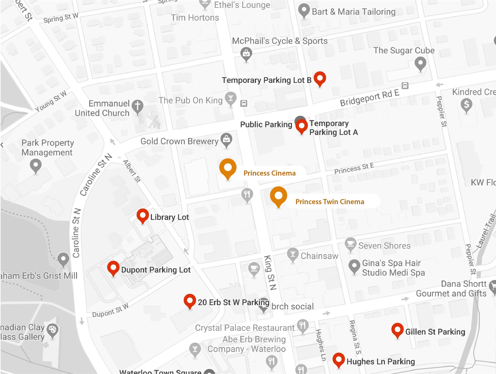

Parking

- Free 3 hour Parking
- - Spring
- - Young
- - Peppler
- - Laurel
- Free Evening Streeet Parking (After 6 pm)
- - Waterloo Public Library
- - Marsland Centre
- - Waterloo town Square
- Inexpensive Matinee Parking
- - Behind Old Goat Bookstore
- - Waterloo Public Library (lower lot)
- - Station Lot (Paul Puncher)
- - King/ William Gazebo Lot
- - Walmart/ Bulk Barn Mall Lot
We encourage you to use the nearest lots at Regina & Bridgeport (TA & TB), Library (L),
Dupont (D), Station Lot (S), Regina (R) and nearby street parking. Thank you for continuing to
support the independent businesses in Uptown.
*Click the image of the map to find out more about the parking locations near our theaters.